Exploratory Data Analysis
In exploratory data analysis, we often begin by calculating summary
statistics for and plotting key variables in our data. The
CityInfo dataframe has both factor and numeric data. For
example: it might be interesting to examine the relationship between
population size and the number of sports teams or between the amount of
sunshine and the number of bike commuters; or maybe we are interested in
looking at regional variation in sunshine in our focal cities.
Load in data and examine the structure.
## 'data.frame': 19 obs. of 8 variables:
## $ City : chr "New York" "Los Angeles" "San Francisco" "Chicago" ...
## $ State : chr "NY" "CA" "CA" "IL" ...
## $ Region : chr "NE" "W" "W" "MW" ...
## $ Populationmetro_2016: int 20685000 15135000 5955000 9185000 2795000 2000000 6280000 5595000 4490000 3660000 ...
## $ Sunshine_per : int 58 73 66 54 58 48 61 56 58 53 ...
## $ Bikecom_per : num 1.1 1.3 4.4 1.7 4.6 7.2 0.2 1.9 2.4 0.8 ...
## $ Year : int 1625 1781 1776 1803 1867 1845 1841 1682 1630 1701 ...
## $ Sportsteam_num : int 9 8 6 5 4 1 4 4 4 4 ...Let’s calculate the mean amount of sunshine for
midwestern cities.
## [1] 54.75Now let’s subset the dataframe according to regions and calculate the
mean sunshine for all regions. Try using the aggregate()
function.
Practice Exercise-1
Often, we want to calculate numerous descriptive statistics
simultaneously. There are numerous functions which can accomplish this
task. Here, we’ll try using functions from the psych
package.
Exercise 1.1
Using the describe() function, calculate summary
statistics for the entire CityInfo dataframe.
Exercise 1.2
Calculate summary statistics for only the number of sports teams per city.
The describeBy() function is useful when you want to
summarize numerous variables according to the some grouping
variable.
Exercise 1.3
Use describeBy() to generate summary statistics about
the number of sports teams per city by region. Assign the results to a
new object called Sportstats. Print the object
Sportstats.
Sportstats <- describeBy(CityInfo$Sportsteam_num, CityInfo$Region)
SportstatsMeasures of Dispersion
In addition to central tendency metrics, it is also often useful to examine the spread or dispersion of observations within a dataset.
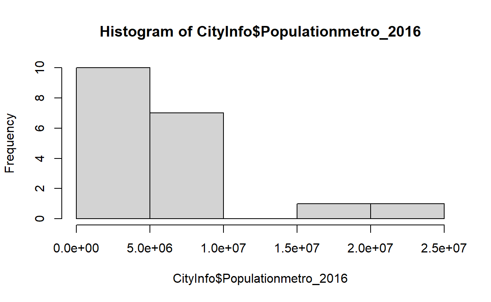
## [1] 2.290866e+13Another tool for quickly examining the spread of the data is the
table() function. To answer the question
How many cities are in each region? we can use the
following code.
##
## MW NE S W
## 4 3 6 6Practice Exercise-2
Exercise 2_1
Find out the variation in amount of sunshine for the
cities.
Grouping Variables Together
Oftentimes, data are not in the most useful format for particular
analyses. We have to reshape and summarize data in order to draw
insights from them. For this section, we will use data from: Tiffany
Stephens and Ginny Eckert,2019, Knowledge Network for Biocomplexity.
urn:uuid:b910f74b-171b-4d2b-b065-fb21823a8e84
Boat-based
counts of sea otters at specific sites in Southeast Alaska. These
data are sea otter counts from 2017 and 2018 in Alaska.
First read in and examine the data.
## 'data.frame': 1337 obs. of 8 variables:
## $ region : chr "west prince of wales island, alaska" "west prince of wales island, alaska" "west prince of wales island, alaska" "west prince of wales island, alaska" ...
## $ site_name : chr "Big Clam Bay" "Big Clam Bay" "Big Tree Bay" "Big Tree Bay" ...
## $ latitude_N : num 55.2 55.2 55.6 55.6 55.6 ...
## $ longitude_E: num -133 -133 -133 -133 -133 ...
## $ date_DDMMYY: chr "18/7/18" "26/7/18" "18/7/18" "18/7/18" ...
## $ year : int 2018 2018 2018 2018 2018 2018 2018 2018 2018 2018 ...
## $ replicate : int 1 2 1 1 1 1 1 1 1 1 ...
## $ n_otter : int 1 0 1 2 1 1 3 1 13 1 ...This dataset has 8 variables: region,
site_name, latitude_N,
latitude_E, data_DDMMYY, year,
replicate, and n_otter.
Let’s aggregate the mean number of otters observed on a given day by site.
The above applied the mean() function to all columns.
This can be useful when you have many numeric variables you wish to
quickly summarize. Other times however, it can be helpful to isolate
specific variables for comparison.
Practice Exercise-3
Exercise 3.1
Using order() rearrange the dataframe by the total
number of otters per site so that the sites with the most otters are at
the top of the data. Store your resulting data frame in an object called
notterpersite. Print it.
Hint Try aggregating the data set first by site and
then go ahead with order().
notterpersite <- aggregate(formula=n_otter ~ site_name, FUN=sum, data=otter)
notterpersite<- notterpersite[order(notterpersite$n_otter,decreasing=T),]
notterpersiteExercise 3.2
What are the top 3 sites for otter sightings? Select out just these cases?
Some More Exercises
Practice your data wrangling and exploratory data analysis skills by answering the following. Provide all code required to have only the required information as the output.
Exercise 1
Select the latitude and longitude of the site with the highest number of otter sightings on any single day.
Exercise 2
How many observations come from Big Tree Day?
Exercise 3
What was the total number of otters observed over the course of 2017?
Using ifelse() statements
Another common form of logical testing in R is the
ifelse() statement. In this case, you pass a logical test
to R and if the output is true, a certain action is performed, then if
it is false, another action is performed. This can be used to make new
variables, subset data, color points on a graph and much more.
Using the CityInfo data and ifelse() we can
mark each row based on whether or not the region is MW.
## [1] "nope" "nope" "nope" "yes" "yes" "nope" "nope" "nope" "nope" "yes"
## [11] "nope" "nope" "nope" "nope" "nope" "nope" "nope" "nope" "yes"We can also see which cities are both in the midwest and have over 2% of commuters as bike commuters.
## [1] "nope" "nope" "nope" "nope" "yes" "nope" "nope" "nope" "nope" "nope"
## [11] "nope" "nope" "nope" "nope" "nope" "nope" "nope" "nope" "nope"Practice Exercise-4
ifelse() statements can also be nested. How might you
write code to produce the output “sunny” for all cities with over 70
percent sunshine, and “kind of sunny” for cities with between 55 and 70
percent sunshine and “not sunny” for cities with less than 55 percent
sunshine?
Tip: Add a new column to CityInfo
dataframe named sunlevel to store the new information! Bind
the sunshine amount and sunlevel columns
together to display!
CityInfo$sunlevel<- ifelse(CityInfo$Sunshine_per > 70, "sunny",ifelse(CityInfo$Sunshine_per >55, "kind of sunny","not sunny"))
cbind(CityInfo$Sunshine_per,CityInfo$sunlevel)The paste() function
Strings can be modified directly using the paste()
function. This can be useful for creating new columns or systematically
changing string data.
Fr example, we know that the CityInfo$Year column refers
to the year each city was founded. Let’s add the string “Founded in”
before each year name.
## [1] "Founded in 1625" "Founded in 1781" "Founded in 1776" "Founded in 1803"
## [5] "Founded in 1867" "Founded in 1845" "Founded in 1841" "Founded in 1682"
## [9] "Founded in 1630" "Founded in 1701" "Founded in 1858" "Founded in 1851"
## [13] "Founded in 1868" "Founded in 1843" "Founded in 1718" "Founded in 1837"
## [17] "Founded in 1790" "Founded in 1896" "Founded in 1833"Now let’s paste together the city and state names.
## [1] "New York NY" "Los Angeles CA" "San Francisco CA" "Chicago IL"
## [5] "Minneapolis MN" "Portland OR" "Dallas TX" "Philadelphia PA"
## [9] "Boston MA" "Detroit MI" "Denver CO" "Seattle WA"
## [13] "Phoenix AZ" "Atlanta GA" "New Orleans LA" "Houston TX"
## [17] "Washington DC DC" "Miami FL" "Milwaukee WI"An important feature of the paste() function is that you
can customize the characters separating each value.
## [1] "Actor-Model-Writer"## [1] "New York: NY" "Los Angeles: CA" "San Francisco: CA"
## [4] "Chicago: IL" "Minneapolis: MN" "Portland: OR"
## [7] "Dallas: TX" "Philadelphia: PA" "Boston: MA"
## [10] "Detroit: MI" "Denver: CO" "Seattle: WA"
## [13] "Phoenix: AZ" "Atlanta: GA" "New Orleans: LA"
## [16] "Houston: TX" "Washington DC: DC" "Miami: FL"
## [19] "Milwaukee: WI"Plotting in base R
A number of different types of charts can be made with the base graphics package.
For example,scatter plots can be made using the plot()
function.

Line plots are made with the plot() function, while
setting the type to line.
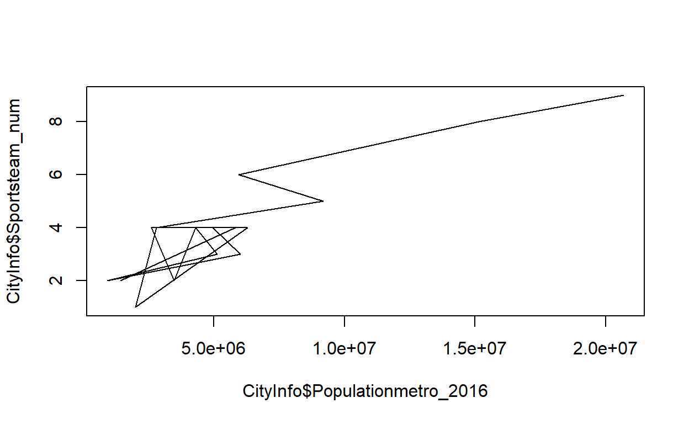
Histograms can be made with the hist() function.
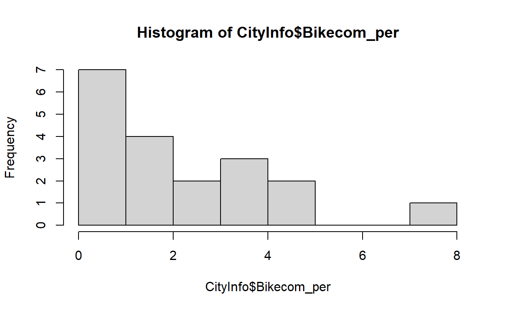
Boxplots can be made with the boxplot() function.
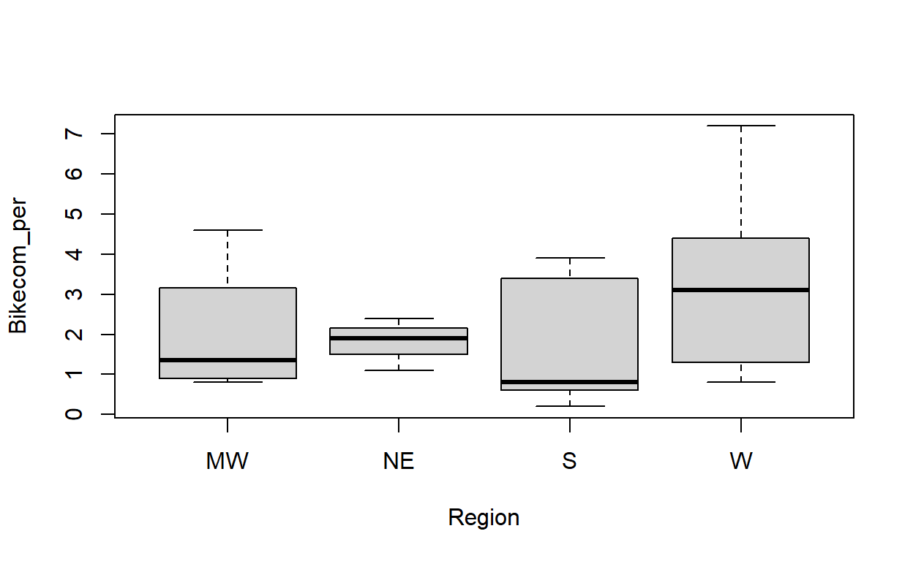
Adding labels
Adding descriptive labels is an important part of data visualization.
In base R plotting, labels can be added with the main=,
xlab= and ylab= arguments.
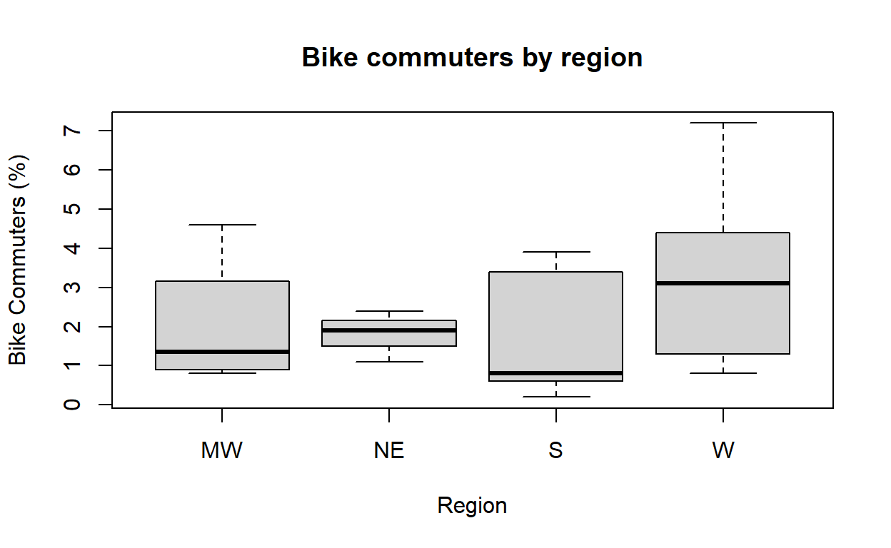
Sometimes we also want to add annotations to plots noting things like
sample size, key observations of interest, or summary statistics. Text
can be added to an existing plot with thetext() function.
The position is set with x and y coordinates at the scale of the plot
and the text can be customized in numerous ways.
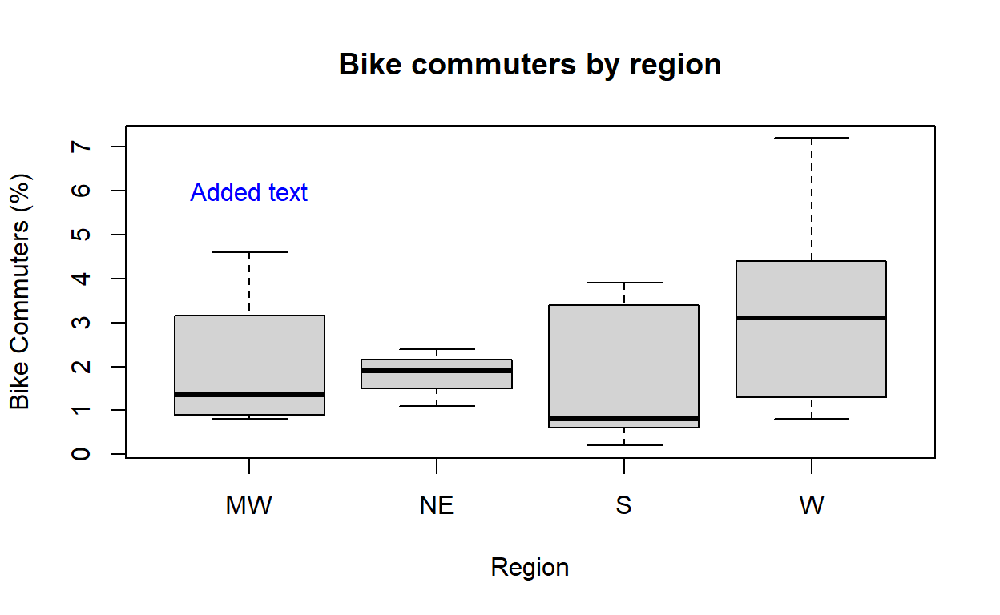
Text can also be added to plots based on the position of data points in the plot. Here, we add text above each regional boxplot.
## Warning in xy.coords(x, y, recycle = TRUE, setLab = FALSE): NAs introduced by
## coercionAdd text over each boxplot at the mean point on each plot.
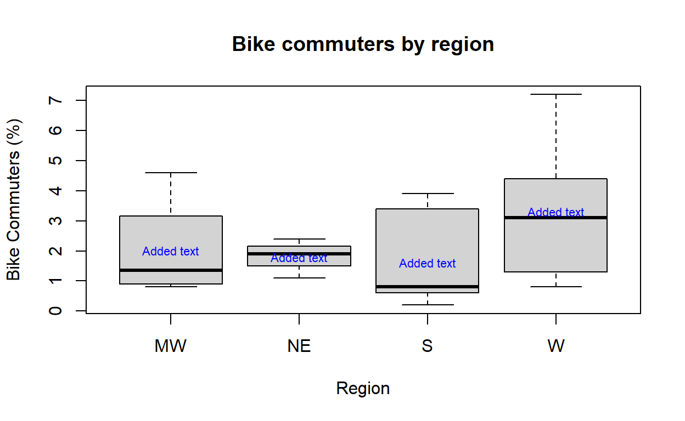
Practice Exercise-5
Exercise 5.1
Label the bike commuter boxplot with the number of cities per region (that is, the n for each boxplot). Set the label up so that it will automatically update if the number of observations change. That is, find the number algorithmically rather than manually setting the number.
boxplot(Bikecom_per~Region,data=CityInfo, main="Bike commuters by region", xlab="Region", ylab="Bike Commuters (%)")
text(1:4,6,paste("N=",aggregate(City~Region,FUN=length, data=CityInfo)$City, sep=""))Adjusting graphical parameters
By adjusting graphical parameters such as point shape, color, and size, you can represent multiple relationships in a single figure. In the figures below, we can differentiate the cities’ regions using different shapes and color.
Below is a basic plot, with no customized graphical parameters.
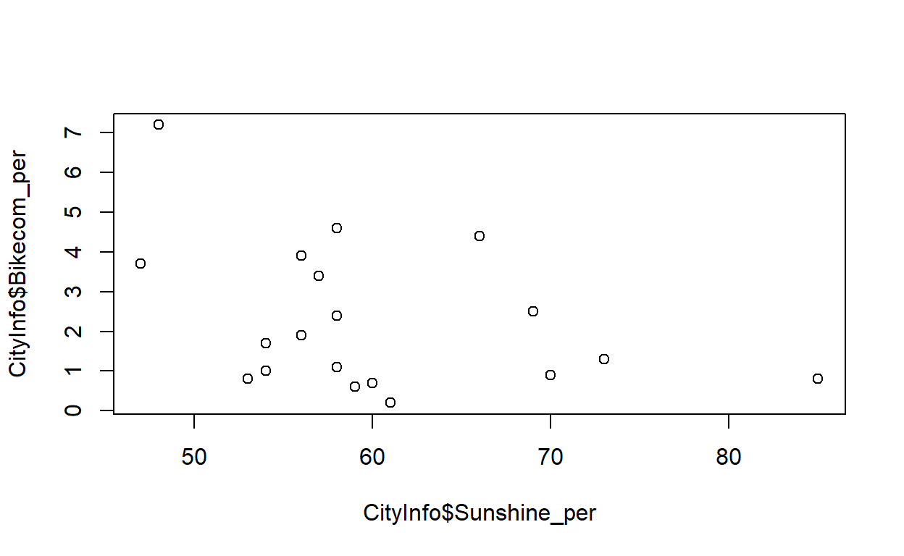
The pch= argument sets the shape of the points. In this
case, we define the point shape based on the region each city point is
in.
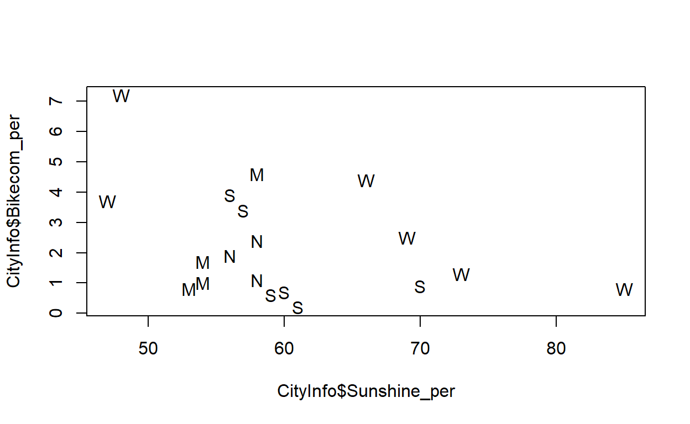
The col= argument sets the color of the points. Note
that the Region variable is a factor with 4 levels which is
needed to be mentioned in order to group the points by different colors
for different regions.
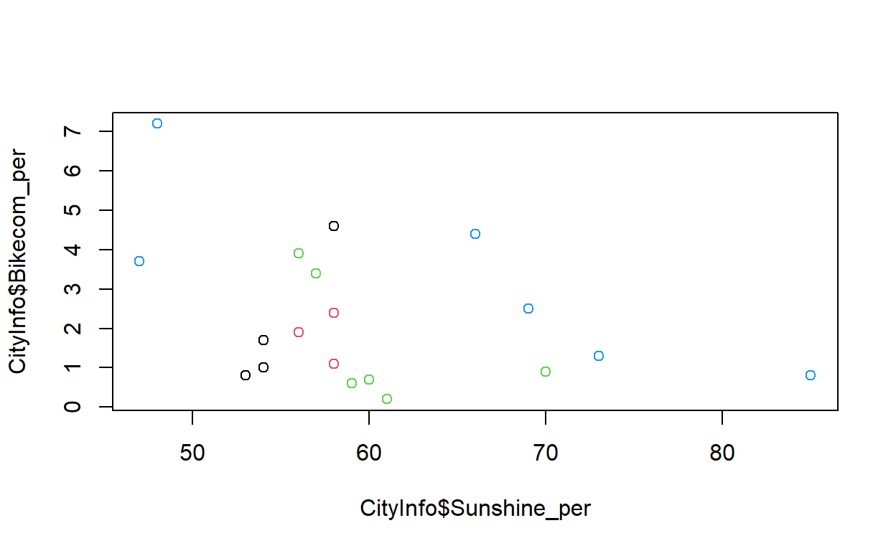
The cex= argument sets the size of the points.
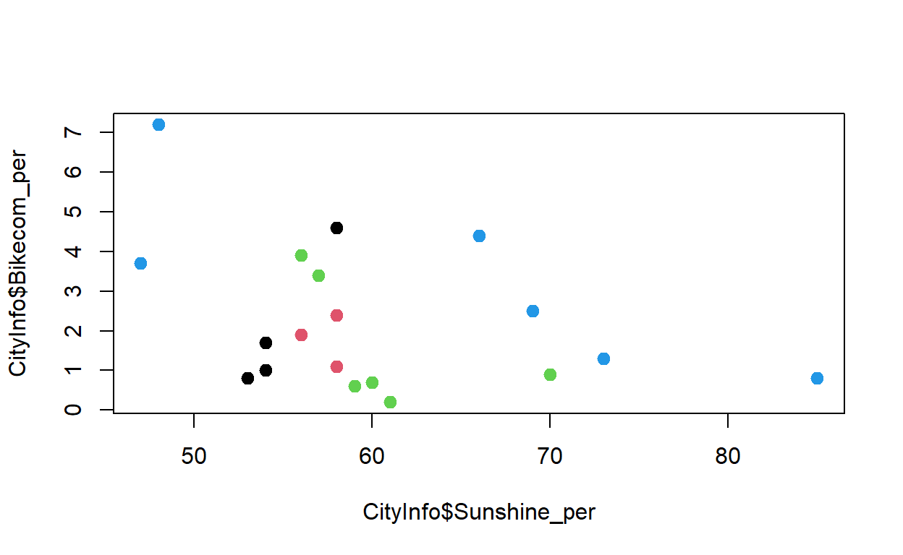
Practice Exercise-6
Exercise 6.1
In the figures above, how do we know which symbol or color refers to
which region? We have to make a legend. Try using the
legend() to add a legend to your scatterplot. If you’re
stuck, take a look at the legend() help file.
Hint:Create the plot first and then use
legend on top of that. See at which position of the plot
you want to display the legend!
Pushing Things a Little Further!
The Region variable is a factor. This means it has
unique properties we can use to our advantage., such as referring to the
individual levels. It is also important to note that values are stored
in the factor according to their level number, so if you want to convert
the data to other classes, you must first adjust for this.
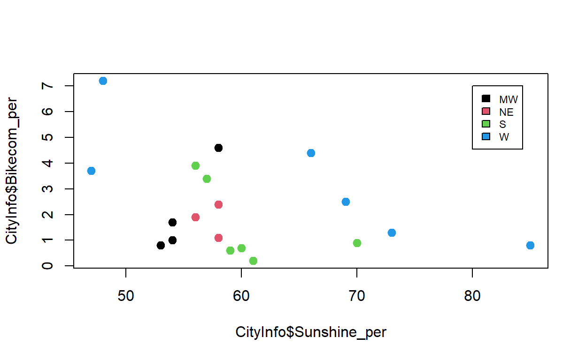
Colors
R has 657 built-in colors. You can view them by using the
colors() function. Try it!
## [1] "white" "aliceblue" "antiquewhite"
## [4] "antiquewhite1" "antiquewhite2" "antiquewhite3"
## [7] "antiquewhite4" "aquamarine" "aquamarine1"
## [10] "aquamarine2" "aquamarine3" "aquamarine4"
## [13] "azure" "azure1" "azure2"
## [16] "azure3" "azure4" "beige"
## [19] "bisque" "bisque1" "bisque2"
## [22] "bisque3" "bisque4" "black"
## [25] "blanchedalmond" "blue" "blue1"
## [28] "blue2" "blue3" "blue4"
## [31] "blueviolet" "brown" "brown1"
## [34] "brown2" "brown3" "brown4"
## [37] "burlywood" "burlywood1" "burlywood2"
## [40] "burlywood3" "burlywood4" "cadetblue"
## [43] "cadetblue1" "cadetblue2" "cadetblue3"
## [46] "cadetblue4" "chartreuse" "chartreuse1"
## [49] "chartreuse2" "chartreuse3" "chartreuse4"
## [52] "chocolate" "chocolate1" "chocolate2"
## [55] "chocolate3" "chocolate4" "coral"
## [58] "coral1" "coral2" "coral3"
## [61] "coral4" "cornflowerblue" "cornsilk"
## [64] "cornsilk1" "cornsilk2" "cornsilk3"
## [67] "cornsilk4" "cyan" "cyan1"
## [70] "cyan2" "cyan3" "cyan4"
## [73] "darkblue" "darkcyan" "darkgoldenrod"
## [76] "darkgoldenrod1" "darkgoldenrod2" "darkgoldenrod3"
## [79] "darkgoldenrod4" "darkgray" "darkgreen"
## [82] "darkgrey" "darkkhaki" "darkmagenta"
## [85] "darkolivegreen" "darkolivegreen1" "darkolivegreen2"
## [88] "darkolivegreen3" "darkolivegreen4" "darkorange"
## [91] "darkorange1" "darkorange2" "darkorange3"
## [94] "darkorange4" "darkorchid" "darkorchid1"
## [97] "darkorchid2" "darkorchid3" "darkorchid4"
## [100] "darkred" "darksalmon" "darkseagreen"
## [103] "darkseagreen1" "darkseagreen2" "darkseagreen3"
## [106] "darkseagreen4" "darkslateblue" "darkslategray"
## [109] "darkslategray1" "darkslategray2" "darkslategray3"
## [112] "darkslategray4" "darkslategrey" "darkturquoise"
## [115] "darkviolet" "deeppink" "deeppink1"
## [118] "deeppink2" "deeppink3" "deeppink4"
## [121] "deepskyblue" "deepskyblue1" "deepskyblue2"
## [124] "deepskyblue3" "deepskyblue4" "dimgray"
## [127] "dimgrey" "dodgerblue" "dodgerblue1"
## [130] "dodgerblue2" "dodgerblue3" "dodgerblue4"
## [133] "firebrick" "firebrick1" "firebrick2"
## [136] "firebrick3" "firebrick4" "floralwhite"
## [139] "forestgreen" "gainsboro" "ghostwhite"
## [142] "gold" "gold1" "gold2"
## [145] "gold3" "gold4" "goldenrod"
## [148] "goldenrod1" "goldenrod2" "goldenrod3"
## [151] "goldenrod4" "gray" "gray0"
## [154] "gray1" "gray2" "gray3"
## [157] "gray4" "gray5" "gray6"
## [160] "gray7" "gray8" "gray9"
## [163] "gray10" "gray11" "gray12"
## [166] "gray13" "gray14" "gray15"
## [169] "gray16" "gray17" "gray18"
## [172] "gray19" "gray20" "gray21"
## [175] "gray22" "gray23" "gray24"
## [178] "gray25" "gray26" "gray27"
## [181] "gray28" "gray29" "gray30"
## [184] "gray31" "gray32" "gray33"
## [187] "gray34" "gray35" "gray36"
## [190] "gray37" "gray38" "gray39"
## [193] "gray40" "gray41" "gray42"
## [196] "gray43" "gray44" "gray45"
## [199] "gray46" "gray47" "gray48"
## [202] "gray49" "gray50" "gray51"
## [205] "gray52" "gray53" "gray54"
## [208] "gray55" "gray56" "gray57"
## [211] "gray58" "gray59" "gray60"
## [214] "gray61" "gray62" "gray63"
## [217] "gray64" "gray65" "gray66"
## [220] "gray67" "gray68" "gray69"
## [223] "gray70" "gray71" "gray72"
## [226] "gray73" "gray74" "gray75"
## [229] "gray76" "gray77" "gray78"
## [232] "gray79" "gray80" "gray81"
## [235] "gray82" "gray83" "gray84"
## [238] "gray85" "gray86" "gray87"
## [241] "gray88" "gray89" "gray90"
## [244] "gray91" "gray92" "gray93"
## [247] "gray94" "gray95" "gray96"
## [250] "gray97" "gray98" "gray99"
## [253] "gray100" "green" "green1"
## [256] "green2" "green3" "green4"
## [259] "greenyellow" "grey" "grey0"
## [262] "grey1" "grey2" "grey3"
## [265] "grey4" "grey5" "grey6"
## [268] "grey7" "grey8" "grey9"
## [271] "grey10" "grey11" "grey12"
## [274] "grey13" "grey14" "grey15"
## [277] "grey16" "grey17" "grey18"
## [280] "grey19" "grey20" "grey21"
## [283] "grey22" "grey23" "grey24"
## [286] "grey25" "grey26" "grey27"
## [289] "grey28" "grey29" "grey30"
## [292] "grey31" "grey32" "grey33"
## [295] "grey34" "grey35" "grey36"
## [298] "grey37" "grey38" "grey39"
## [301] "grey40" "grey41" "grey42"
## [304] "grey43" "grey44" "grey45"
## [307] "grey46" "grey47" "grey48"
## [310] "grey49" "grey50" "grey51"
## [313] "grey52" "grey53" "grey54"
## [316] "grey55" "grey56" "grey57"
## [319] "grey58" "grey59" "grey60"
## [322] "grey61" "grey62" "grey63"
## [325] "grey64" "grey65" "grey66"
## [328] "grey67" "grey68" "grey69"
## [331] "grey70" "grey71" "grey72"
## [334] "grey73" "grey74" "grey75"
## [337] "grey76" "grey77" "grey78"
## [340] "grey79" "grey80" "grey81"
## [343] "grey82" "grey83" "grey84"
## [346] "grey85" "grey86" "grey87"
## [349] "grey88" "grey89" "grey90"
## [352] "grey91" "grey92" "grey93"
## [355] "grey94" "grey95" "grey96"
## [358] "grey97" "grey98" "grey99"
## [361] "grey100" "honeydew" "honeydew1"
## [364] "honeydew2" "honeydew3" "honeydew4"
## [367] "hotpink" "hotpink1" "hotpink2"
## [370] "hotpink3" "hotpink4" "indianred"
## [373] "indianred1" "indianred2" "indianred3"
## [376] "indianred4" "ivory" "ivory1"
## [379] "ivory2" "ivory3" "ivory4"
## [382] "khaki" "khaki1" "khaki2"
## [385] "khaki3" "khaki4" "lavender"
## [388] "lavenderblush" "lavenderblush1" "lavenderblush2"
## [391] "lavenderblush3" "lavenderblush4" "lawngreen"
## [394] "lemonchiffon" "lemonchiffon1" "lemonchiffon2"
## [397] "lemonchiffon3" "lemonchiffon4" "lightblue"
## [400] "lightblue1" "lightblue2" "lightblue3"
## [403] "lightblue4" "lightcoral" "lightcyan"
## [406] "lightcyan1" "lightcyan2" "lightcyan3"
## [409] "lightcyan4" "lightgoldenrod" "lightgoldenrod1"
## [412] "lightgoldenrod2" "lightgoldenrod3" "lightgoldenrod4"
## [415] "lightgoldenrodyellow" "lightgray" "lightgreen"
## [418] "lightgrey" "lightpink" "lightpink1"
## [421] "lightpink2" "lightpink3" "lightpink4"
## [424] "lightsalmon" "lightsalmon1" "lightsalmon2"
## [427] "lightsalmon3" "lightsalmon4" "lightseagreen"
## [430] "lightskyblue" "lightskyblue1" "lightskyblue2"
## [433] "lightskyblue3" "lightskyblue4" "lightslateblue"
## [436] "lightslategray" "lightslategrey" "lightsteelblue"
## [439] "lightsteelblue1" "lightsteelblue2" "lightsteelblue3"
## [442] "lightsteelblue4" "lightyellow" "lightyellow1"
## [445] "lightyellow2" "lightyellow3" "lightyellow4"
## [448] "limegreen" "linen" "magenta"
## [451] "magenta1" "magenta2" "magenta3"
## [454] "magenta4" "maroon" "maroon1"
## [457] "maroon2" "maroon3" "maroon4"
## [460] "mediumaquamarine" "mediumblue" "mediumorchid"
## [463] "mediumorchid1" "mediumorchid2" "mediumorchid3"
## [466] "mediumorchid4" "mediumpurple" "mediumpurple1"
## [469] "mediumpurple2" "mediumpurple3" "mediumpurple4"
## [472] "mediumseagreen" "mediumslateblue" "mediumspringgreen"
## [475] "mediumturquoise" "mediumvioletred" "midnightblue"
## [478] "mintcream" "mistyrose" "mistyrose1"
## [481] "mistyrose2" "mistyrose3" "mistyrose4"
## [484] "moccasin" "navajowhite" "navajowhite1"
## [487] "navajowhite2" "navajowhite3" "navajowhite4"
## [490] "navy" "navyblue" "oldlace"
## [493] "olivedrab" "olivedrab1" "olivedrab2"
## [496] "olivedrab3" "olivedrab4" "orange"
## [499] "orange1" "orange2" "orange3"
## [502] "orange4" "orangered" "orangered1"
## [505] "orangered2" "orangered3" "orangered4"
## [508] "orchid" "orchid1" "orchid2"
## [511] "orchid3" "orchid4" "palegoldenrod"
## [514] "palegreen" "palegreen1" "palegreen2"
## [517] "palegreen3" "palegreen4" "paleturquoise"
## [520] "paleturquoise1" "paleturquoise2" "paleturquoise3"
## [523] "paleturquoise4" "palevioletred" "palevioletred1"
## [526] "palevioletred2" "palevioletred3" "palevioletred4"
## [529] "papayawhip" "peachpuff" "peachpuff1"
## [532] "peachpuff2" "peachpuff3" "peachpuff4"
## [535] "peru" "pink" "pink1"
## [538] "pink2" "pink3" "pink4"
## [541] "plum" "plum1" "plum2"
## [544] "plum3" "plum4" "powderblue"
## [547] "purple" "purple1" "purple2"
## [550] "purple3" "purple4" "red"
## [553] "red1" "red2" "red3"
## [556] "red4" "rosybrown" "rosybrown1"
## [559] "rosybrown2" "rosybrown3" "rosybrown4"
## [562] "royalblue" "royalblue1" "royalblue2"
## [565] "royalblue3" "royalblue4" "saddlebrown"
## [568] "salmon" "salmon1" "salmon2"
## [571] "salmon3" "salmon4" "sandybrown"
## [574] "seagreen" "seagreen1" "seagreen2"
## [577] "seagreen3" "seagreen4" "seashell"
## [580] "seashell1" "seashell2" "seashell3"
## [583] "seashell4" "sienna" "sienna1"
## [586] "sienna2" "sienna3" "sienna4"
## [589] "skyblue" "skyblue1" "skyblue2"
## [592] "skyblue3" "skyblue4" "slateblue"
## [595] "slateblue1" "slateblue2" "slateblue3"
## [598] "slateblue4" "slategray" "slategray1"
## [601] "slategray2" "slategray3" "slategray4"
## [604] "slategrey" "snow" "snow1"
## [607] "snow2" "snow3" "snow4"
## [610] "springgreen" "springgreen1" "springgreen2"
## [613] "springgreen3" "springgreen4" "steelblue"
## [616] "steelblue1" "steelblue2" "steelblue3"
## [619] "steelblue4" "tan" "tan1"
## [622] "tan2" "tan3" "tan4"
## [625] "thistle" "thistle1" "thistle2"
## [628] "thistle3" "thistle4" "tomato"
## [631] "tomato1" "tomato2" "tomato3"
## [634] "tomato4" "turquoise" "turquoise1"
## [637] "turquoise2" "turquoise3" "turquoise4"
## [640] "violet" "violetred" "violetred1"
## [643] "violetred2" "violetred3" "violetred4"
## [646] "wheat" "wheat1" "wheat2"
## [649] "wheat3" "wheat4" "whitesmoke"
## [652] "yellow" "yellow1" "yellow2"
## [655] "yellow3" "yellow4" "yellowgreen"How did I know how many named colors there are?
## [1] 657At any given time, R will use a specific palette whenever colors are
required. You can view this with the palette()
function.
## [1] "black" "#DF536B" "#61D04F" "#2297E6" "#28E2E5" "#CD0BBC" "#F5C710"
## [8] "gray62"This is the default palette. The colors are arranged sequentially, such that the first color used will be black, then red, then green3, etc. This is why in our plotting example above the colors could be referred to with their numerical index.
The RColorBrewer package makes beautiful palettes for
data visualization in R. Check out the palettes here: ColorBrewer2.0.
We can also explore a few more useful palettes. 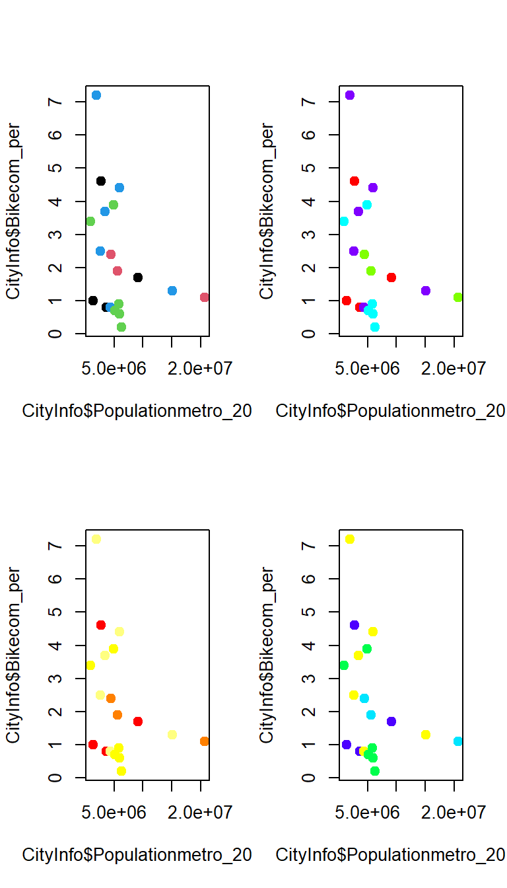
Symbol shapes
There are 25 different shapes available in base R. Some can have different colors for the border and fill, try them out as you continue exploring plotting in R. Read more here
Exploring data with graphs
The pairs() function quickly shows the correlations
between all variables in a dataframe. This can reveal potential
combinations of variables that warrant further investigation.
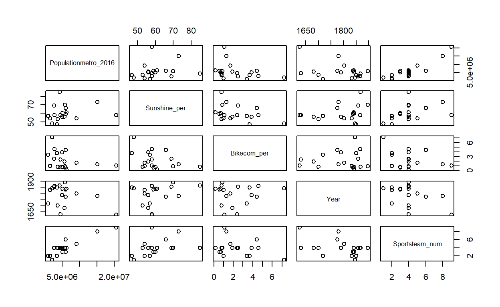